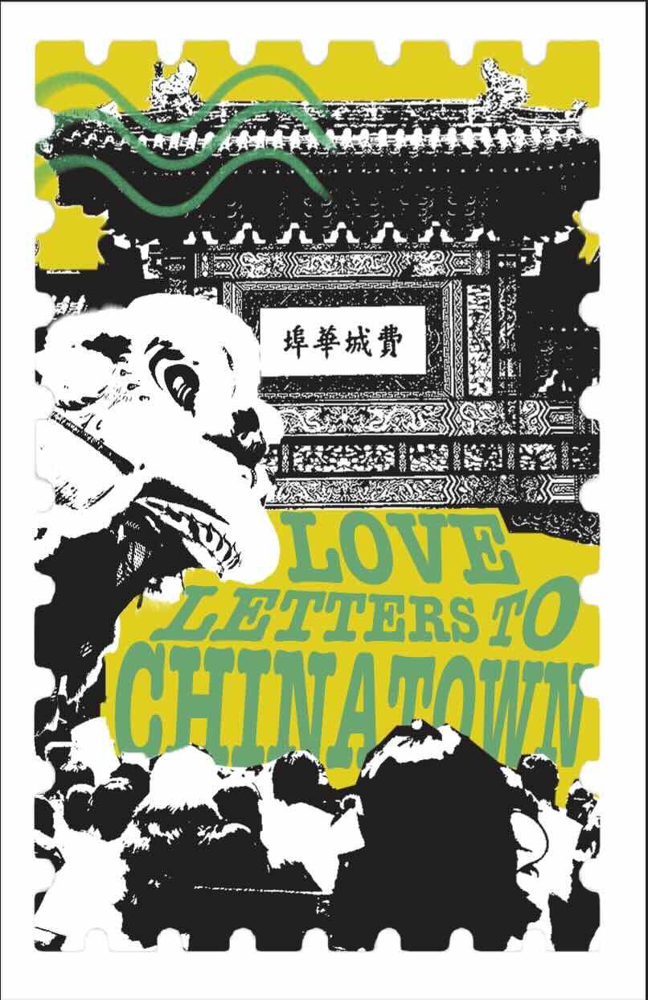
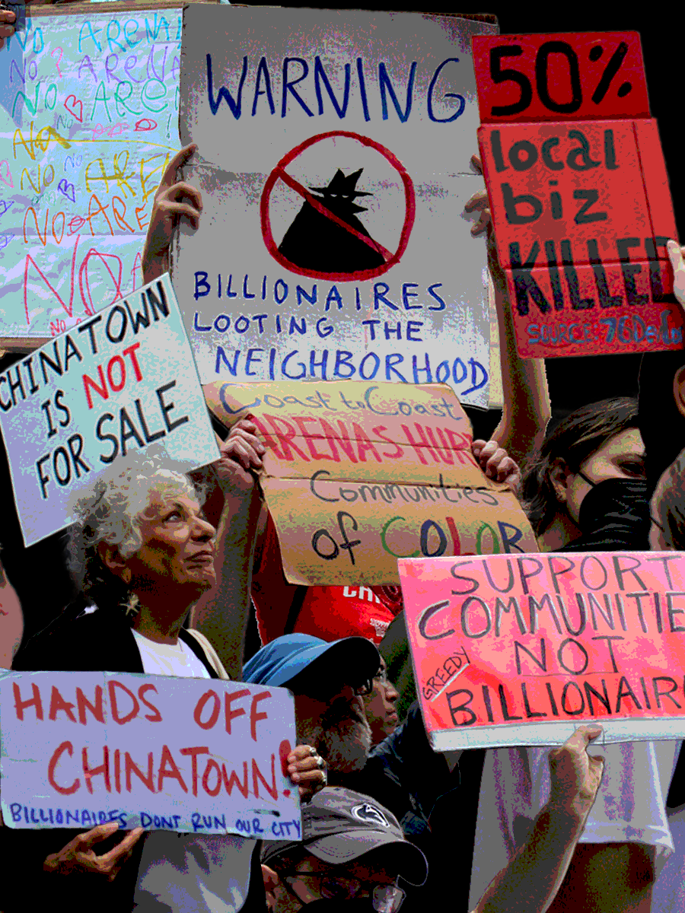
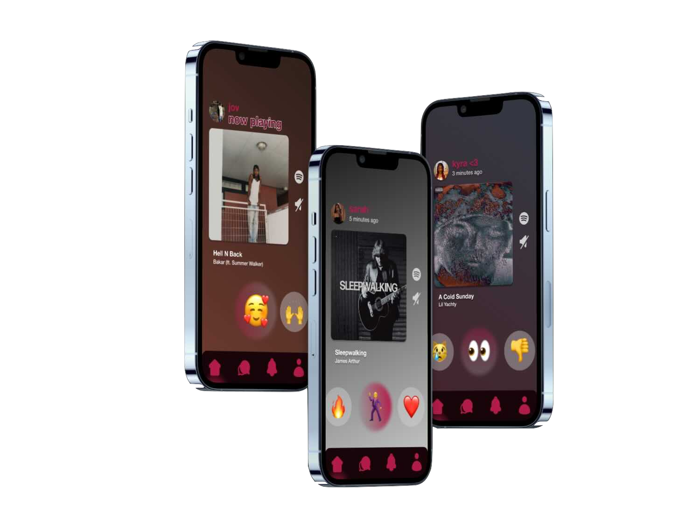

With technological advancements changing the design industry with the unmaintained growth of AI, public opinion on graphic art has only gotten worse and worse. “FAKE” art, a term used for graphic design, animations, anything digitized for the matter, demeans the effort that digital artists put into their work. Photographers are looked down on when people think that the machine matters more than the eye to capture these moments.
Design and art are not interchangeable terms. Design has intentional ideations for use/function seen in projects whereas art is not necessarily required to cater to an audience as it is for self exploration.
2024 Sept. 19 ZINE COVER

Photoshop | Illustrator | Canon T6
GINGIZINE is a student collaborative zine made by high school and college students across Philadelphia that founded an art site by Chinatown in hope to protect them from the arena with a place open for art.
2024 Sept 23 Personal Collage

Canon T6 | Photoshop
Personal project using photos I took on the second protest against the Sixers' Arena that spread across Philadlephia
2024 June 4 TUNEMOJI

Figma | Tinkercad | Photoshop
UX/UI project that delivers an ideation of a collaborative music listening app.